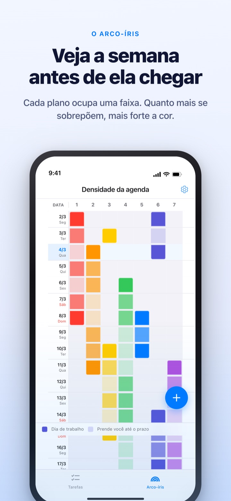
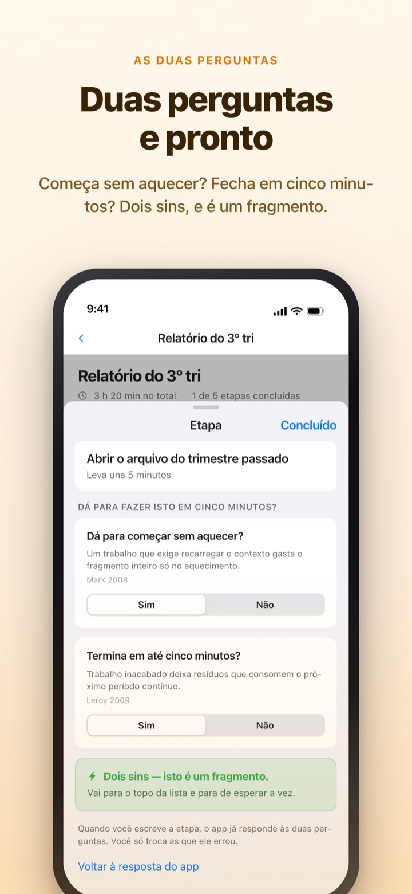
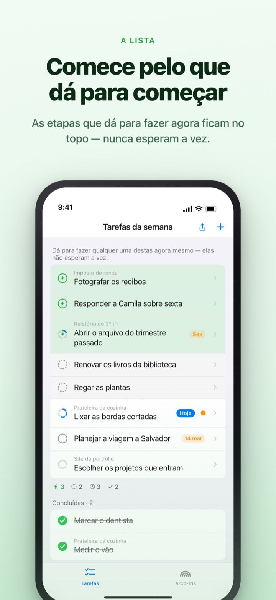
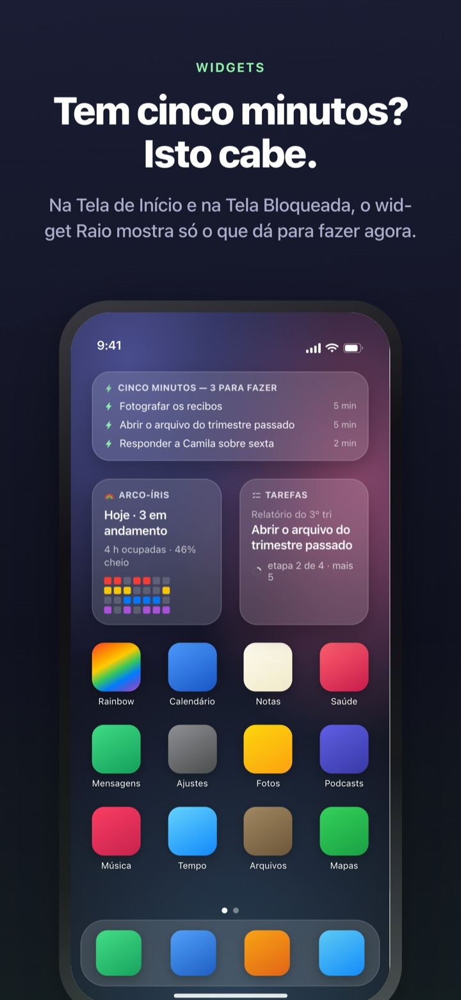

Veja a semana cheia chegando.
Aproveite os cinco minutos livres.
Quanto mais o trabalho se sobrepõe, mais forte fica o arco-íris. Divida uma tarefa grande em passos, e o que dá para fazer numa brecha já está esperando no topo.
O arco-íris, a divisão de tarefas, o timer e a sincronização com o Mac são grátis.

Experimente você mesmo
"Relatório do 3º tri" já está dividido em cinco passos. Escolha um, mude o tempo ou inverta uma resposta. Só o passo com dois "sim" vira um fragmento para fazer em cinco minutos.
A agenda parece vazia, mas a semana te deixa sem fôlego?
Uma agenda mostra se algo está marcado, não quanto está empilhado em cima. Que três prazos caíram na mesma semana você só descobre quando já está nela, e os cinco minutos soltos no meio vão embora relendo a lista de tarefas. O Rainbow of Desire desenha a semana como uma grade, escurece onde há sobreposição e separa os passos que cabem numa brecha.
Duas perguntas resolvem
Ao dividir uma tarefa grande, cada passo recebe duas perguntas. Dá para começar sem aquecer? Termina em até cinco minutos?
Só um duplo sim faz dele um fragmento. O app responde primeiro pelo tempo e pelas palavras, e você só inverte uma resposta quando ela está errada.

Uma brecha? Olhe só o topo
Deslize uma tarefa para a direita para dar um raio a ela, e ela fura a fila e vai para o topo. Não precisa ler a lista inteira.
Se os passos esperam uns pelos outros, você decide uma vez por grupo. Em ordem mostra o primeiro passo pendente; Qualquer ordem, o fragmento que você pode pegar agora.

Dá para ver sem abrir o app
O timer conta até o fim do evento, e o tempo restante aparece também na Dynamic Island e na Tela Bloqueada.
Os widgets da Tela de Início e Bloqueada mostram o que você está fazendo, o que cabe em cinco minutos e o arco-íris da semana. (Widgets são Pro)

Comece em três passos
- 1
Trace um evento
Toque e segure uma célula vazia no dia de início e toque no dia de fim: surge uma linha no arco-íris.
- 2
Divida o que é grande
Toque numa tarefa, escreva os passos e escolha um tempo. O app responde antes as duas perguntas.
- 3
Numa brecha, olhe o topo
Fragmentos e tarefas com raio ficam juntos no topo, sem esperar a vez.
O que você vai ver na tela
- Célula escura · célula clara
- os dias em que você trabalha nisso de fato, e o resto até a data final
- Uma linha cheia
- um dia com tanta coisa junta que um atraso empurra o dia inteiro
- Fragmento
- sim às duas perguntas; pegue quando sobrarem cinco minutos
- Período contínuo curto
- não precisa aquecer, mas não termina num fragmento; sai de uma sentada
- Período contínuo
- precisa aquecer ou leva 45 minutos ou mais; vai para um tempo reservado
- Raio
- sua própria marca de "agora mesmo"; pula para o topo
- Em ordem · Qualquer ordem
- se os passos esperam uns pelos outros, definido uma vez por grupo
- Registro de tempo recuperado
- o balanço da semana: o que sobrou, o tempo recuperado e o descanso, separados e nunca somados
O tempo soma de baixo para cima: o de uma tarefa é a soma dos seus passos.
O que você precisa para hoje é grátis
Grátis
- O arco-íris (grade de densidade da agenda)
- Divisão em passos e as duas perguntas
- Raio e ordem dos passos
- Timer na Dynamic Island e na Tela Bloqueada
- Sincronização com o Rainbow Craft no Mac via iCloud
- O registro das últimas duas semanas
Rainbow Plus · Rainbow Pro
- Plus: estatísticas de eventos e registro além de duas semanas
- Pro: tudo do Plus, mais widgets da Tela de Início e Bloqueada
- Pro: importar do Calendário e exibir sempre
- Pro: compartilhar eventos, só leitura
- Pro: libera também o Rainbow Craft Pro no Mac
Cada um como assinatura anual ou compra única vitalícia
Você só paga para olhar semanas passadas e para levar coisas para fora do app. Se comprou o Pro antes ou ainda tem o plano mensal, continua Pro.
Perguntas frequentes
Preciso de conta ou de iCloud?
Usando sozinho, não. Não há cadastro e tudo fica no seu aparelho. Para outro aparelho, o app do Mac ou o compartilhamento, entre no iCloud.
O app respondeu errado uma pergunta.
Toque no passo e troque entre Sim e Não. A sua resposta sempre vale mais que a do app. Toque em "Voltar à resposta do app" para devolver a ele. Um passo sem tempo não conta como fragmento, porque o app não sabe se ele termina em cinco minutos.
Dá para compartilhar com alguém?
Com um link de convite, você compartilha seus eventos só para leitura (Pro) ou abre uma lista de tarefas que você e os convidados leem e editam juntos. Qualquer pessoa com o link pode entrar, então mande só para quem você quer. Não tem relação com o Compartilhamento Familiar da Apple.
Meus eventos do Calendário aparecem?
Os eventos dos calendários escolhidos aparecem no arco-íris e na visão do dia (Pro). O app só lê e não escreve nada.
Dá para marcar como feito no widget?
Widgets são só para ver. Toque em um e suas tarefas abrem na hora; marque por lá.
O app do Mac é vendido separado?
O Rainbow Craft é um app de macOS à parte na Mac App Store. Com a mesma conta do iCloud, tarefas e planos da semana sincronizam sozinhos, sem custo.
Minhas tarefas antigas continuam lá?
Sim. Tarefas, passos e tempos definidos ficam como estavam. Os rótulos das antigas condições de início são reavaliados pelo app com as duas perguntas.
Onde meus dados ficam guardados?
Não há servidor. Tudo fica no seu aparelho e no seu iCloud privado, onde o desenvolvedor não vê. Sem identificador de publicidade, sem localização. O app envia só estatísticas de uso anônimas, que não identificam você e podem ser desligadas em Ajustes.
Como cancelo uma assinatura?
Em Ajustes > Conta Apple > Assinaturas. Ela renova pelo mesmo preço se você não cancelar até 24 horas antes do fim do período. A compra vitalícia é paga uma vez só.
Travou em algo ou viu algo estranho? Escreva para leeo@kakao.com. Nos ajustes do app também há uma opção de contato.